| Take | Hero at 1024, then renders at 128 / 64 / 48 / 32 / 16 css px (2× retina sources), plus the 16px squint magnified | Rubric | Verdict |
|---|---|---|---|
| engineA · icon.svghand-authored layered SVG — SHIPS | 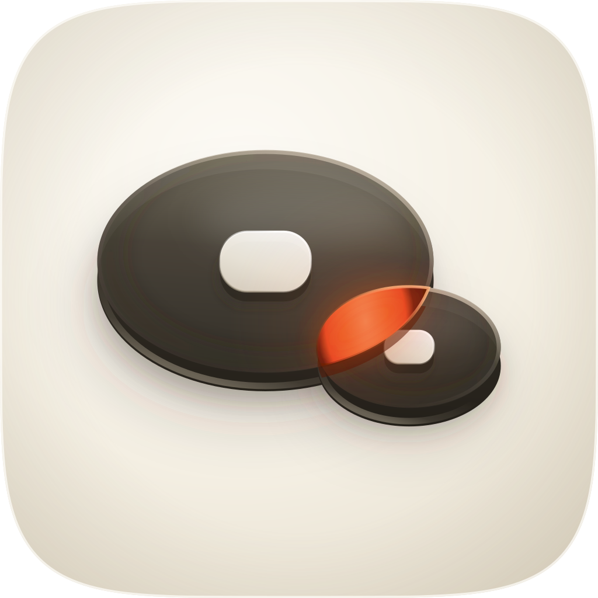 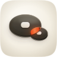 |
11 / 12 | Two reach envelopes as low pucks of graphite gel on a porcelain bench, sized to the 44:24 ratio of the two figures that disagreed in this skill's own files, crossing where the criterion forbids it — and the crossing is the only lit thing in the tile. Checks 1–4 clear on the renders: masked to the family superellipse, centred to the pixel (166px margins both sides), the silhouette nameable as two crossing discs, and 0.243 RMS luminance contrast at 16px against a family median of 0.174. Fails #10 variant robustness: the four named layers satisfy it by construction, but Dark, Clear and Tinted were never rendered, and in grayscale the crossing holds only 1.45:1 against the gel it sits in, so some of the signature is carried by hue. Deviation, documented rather than hidden: the focal is 67% of the tile width against the grammar's 55–65%, which is what buys the 16px mass on a deliberately flat object (46% tall). |
| engineA2 · icon-engineA2-thumb.svgsecond hand-authored SVG — lost | 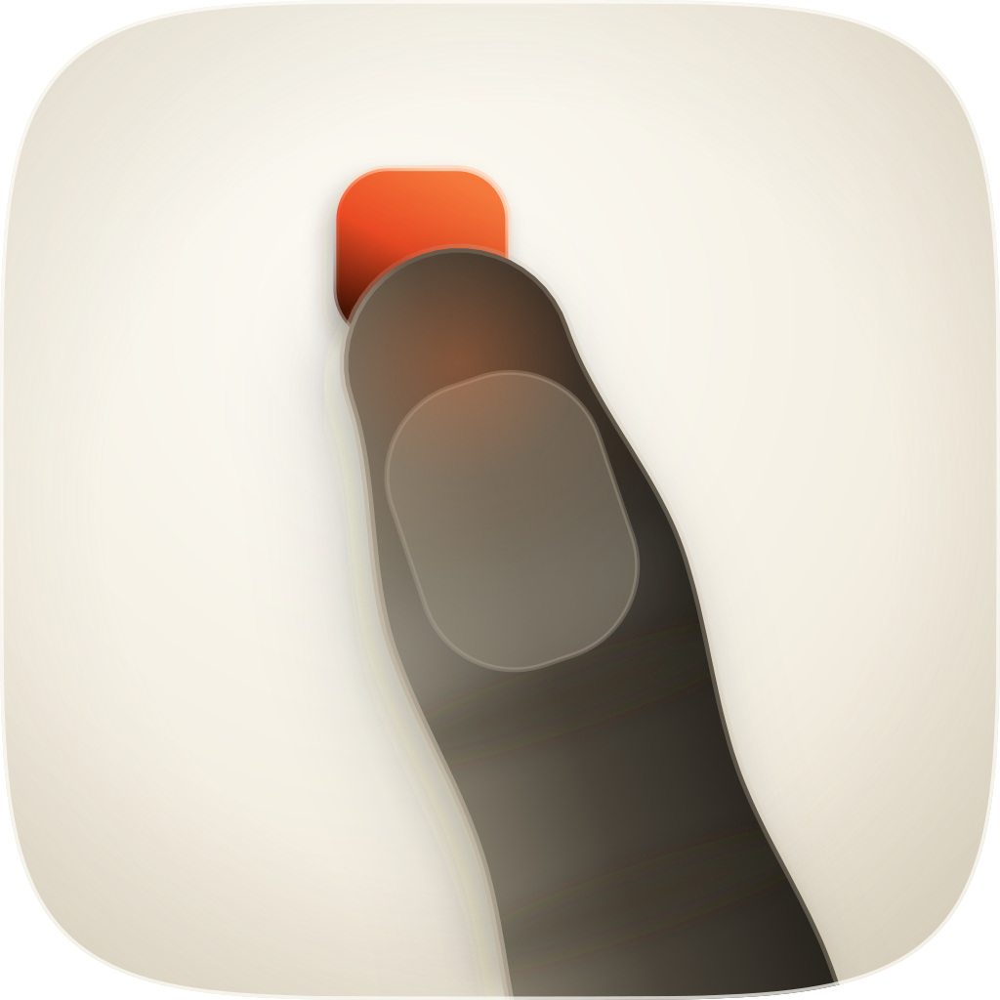 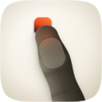 |
8 / 12 | "The Thumb's Measure" — the human as the unit, a graphite thumb cut by the bottom edge landing on a vermilion key plainly narrower than its own pad. Clears 1–4 and measures 0.243 at 16px, so it lost on craft and on ownability rather than on legibility. Fails #8 depth coherence (one across-the-digit ramp gives the pad no form, and the nail plate reads as a patch stuck on rather than a plate catching the key light), #9 era coherence (flat satin where the register wants poured gel), #10, and #11 personality — a finger pressing a button is the corpus's failure mode #1, stock tap-target art, and the shape also collects a wrong reading as a mitten. Kept because its own weakness is the argument for the winner: the size comparison it states literally, the shipping take states as geometry. |
| engineB · icon-engineB-arrow-e6712a.svgArrow 1.1 vector take — lost | 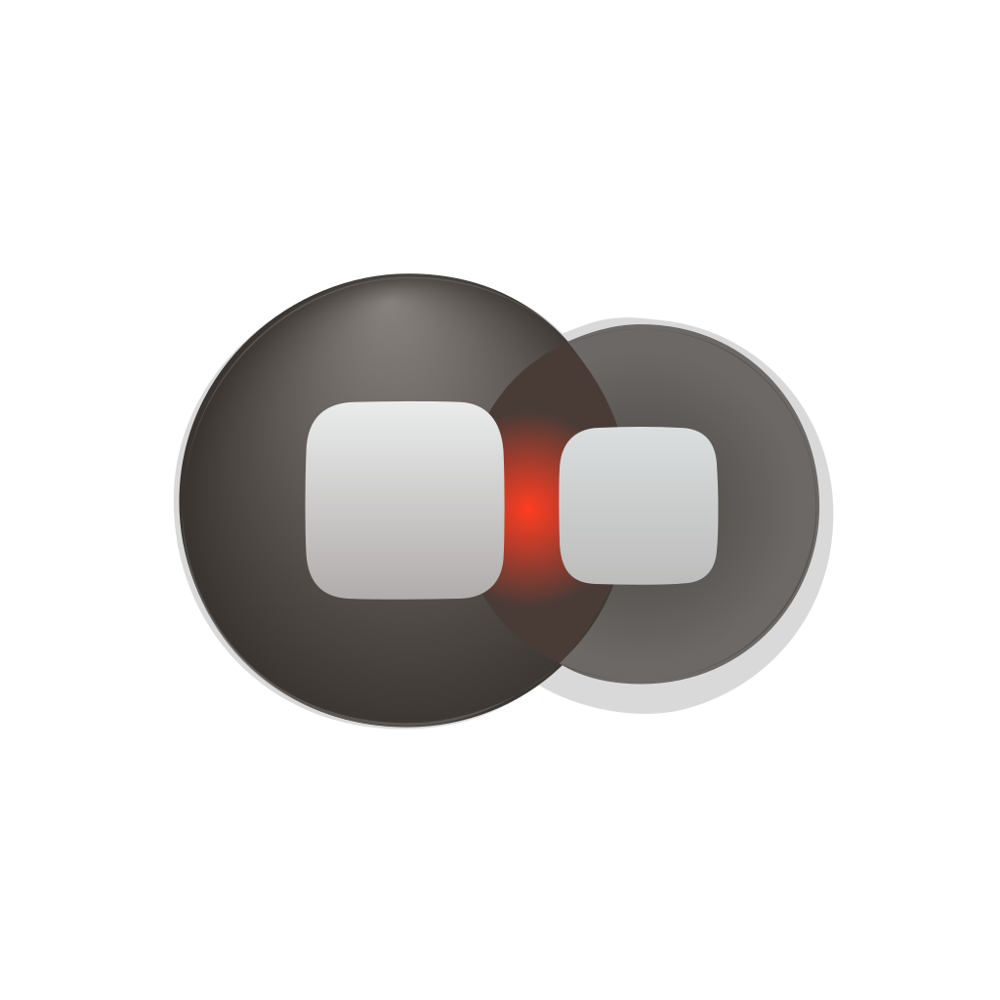 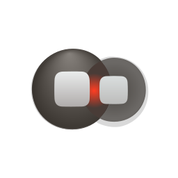 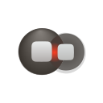 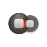 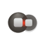 |
5 / 12 | Briefed with the spec verbatim, hexes and radii included. Fails #1 mask discipline — it ships no ground field at all and bakes its own soft circular shadow, so it floats in the Dock — and #7 figure-ground, since grey keys on grey circles separate by almost nothing (0.194 at 16px, the lowest of the set). It also discarded the one piece of arithmetic in the brief, drawing the two envelopes at near-equal radii instead of 44:24, which turns the subject into a pair of goggles and the crossing into a hairline. Nothing salvaged; its one genuine contribution is negative evidence that a horizontal pair reads as a device rather than as two targets. |
| engineC1 · icon-engineC-crossing-04a62e.pngGPT Image 2 raster, corpus-referenced — material target | 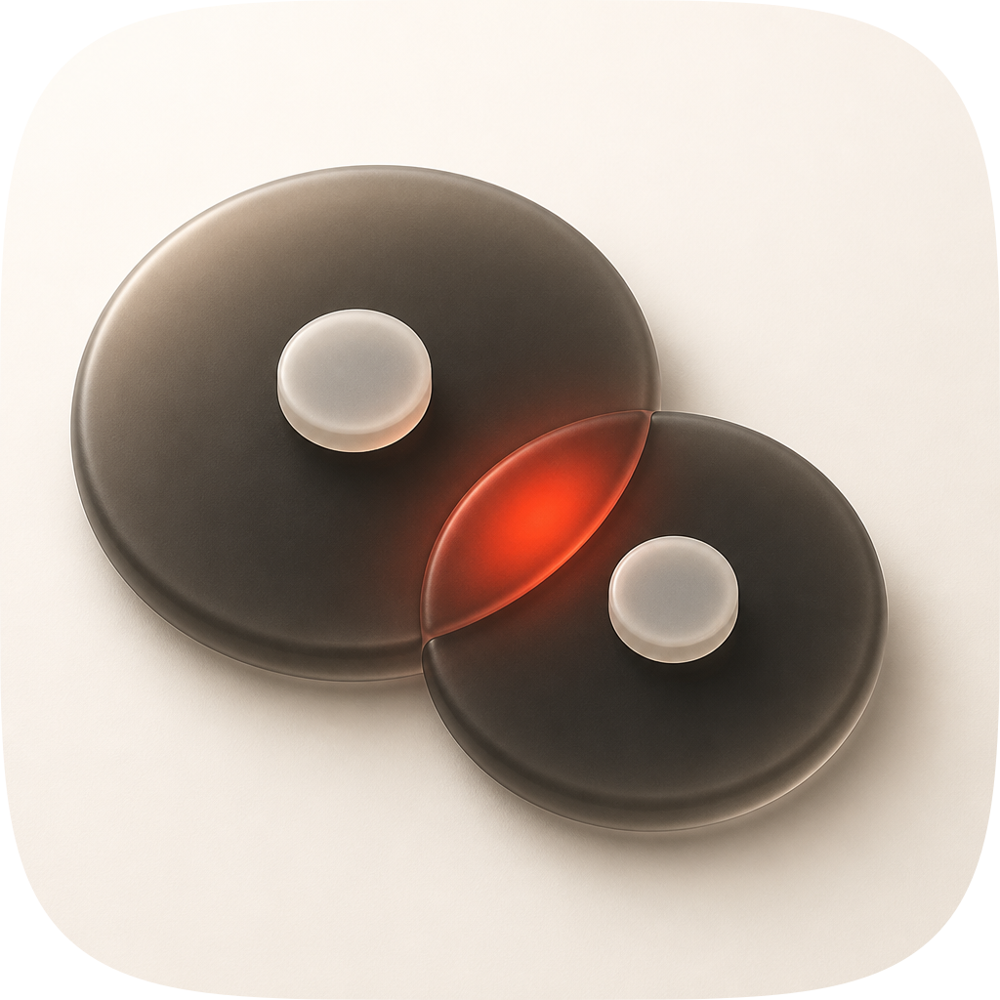 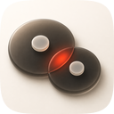 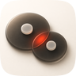 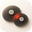 |
9 / 12 | Won the material and composition read, and is the reason engineA was rebuilt twice. It solved what two hand-authored rounds could not: the reach zones are foreshortened pucks with a visible edge band and a seat, which is what stops a plan-view circle with a radial gradient reading as a ball bearing, and its value ramp runs across both pucks off one key rather than per puck. Its crossing glows from inside with the boundary going to near-black graphite. It cannot ship: fails #1 as delivered (opaque square corners — masked for this sheet), #2 (the object is 85% of the tile width with 72px of margin on the left), and #10 by construction, since a flat raster's identity is a colour relationship. Most contrasty take in the set at 0.299. |
| engineC2 · icon-engineC-thumb-6a977a.pngGPT Image 2 raster, second composition — lost | 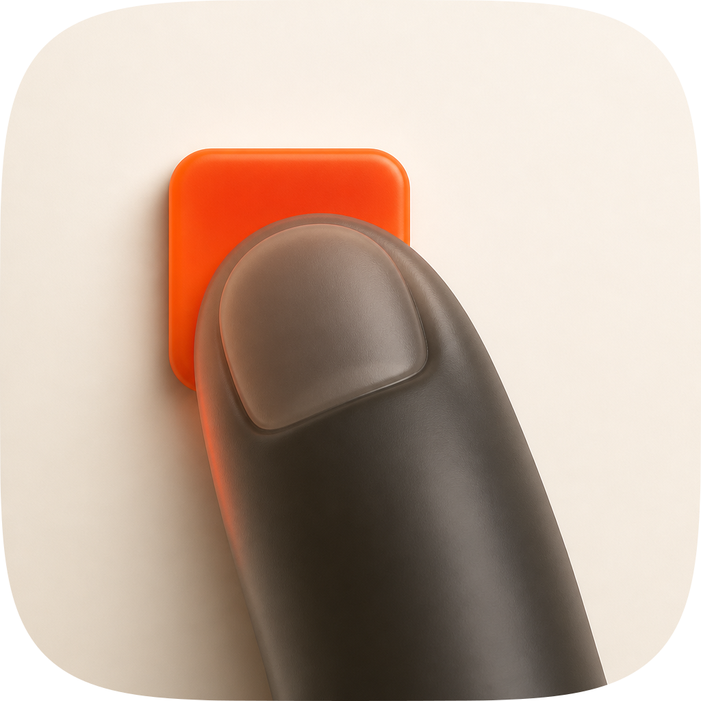 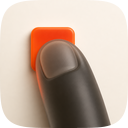 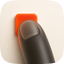 |
7 / 12 | The thumb composition rendered by the material engine — and the best-looking thumb of the four, which is what settled that composition rather than rescuing it. Fails #1 as delivered, #2 (the thumb is cut by the bottom edge with zero margin and no safe zone anywhere), #6 palette economy (the key is a slab of flat saturated orange at roughly a tenth of the tile, an accent spread rather than reserved), and #10. It confirmed the objection instead of answering it: made beautiful, a finger on a button is still a finger on a button. |
fidelity.py structure pass; the two rasters carry their identity as a flat colour relationship and the Arrow take has no ground at all. Checks 1–4 are clear on real renders rather than on intent, its material language is ported by hand from engineC1 (foreshortened pucks with edge bands, one shared user-space ramp across both, a crossing lit from inside with its boundary falling to near-black), and its 16px contrast is 0.243 against the 0.086 of the template icon it replaces. Known liabilities to revisit: #10 is satisfied by construction and never tested — Dark, Clear and Tinted are unrendered, and in grayscale the crossing holds only 1.45:1 against the gel, so part of the signature is hue; the focal is 67% of the tile width against the grammar's 55–65%; the silhouette is nameable as two crossing discs but does not name the subject, so the meaning arrives at 48px and up with the keys, not at 16px; the raster is measurably more contrasty at every size (0.299 against 0.243) and the gel faces are still one ramp plus one soft catch where the reference has an inner top glow; and the pair with design-craft, rebuilt in parallel, has not been read side by side after both land.| Measure | Value |
|---|---|
| 16px RMS luminance contrast — the icon this replaces | 0.086 |
| 16px RMS — shipping take (engineA) | 0.243 |
| 16px RMS — family median across 36 plugin icons | 0.174 |
| 16px RMS — engineC1 / engineC2 / engineA2 / engineB | 0.299 / 0.284 / 0.243 / 0.194 |
| Figure-ground, dilated-ring: gel pucks against their surround | 6.45:1 |
| Figure-ground, dilated-ring: the crossing against the gel it sits in | 1.45:1 |
| Focal footprint | 691 × 472 px (67% × 46% of tile), margins 166 / 166 / 258 / 293 |
python3 audit_sheet.py render . (1024 / 256 / 128 / 96 / 64 / 32 sources); verified by its check subcommand.